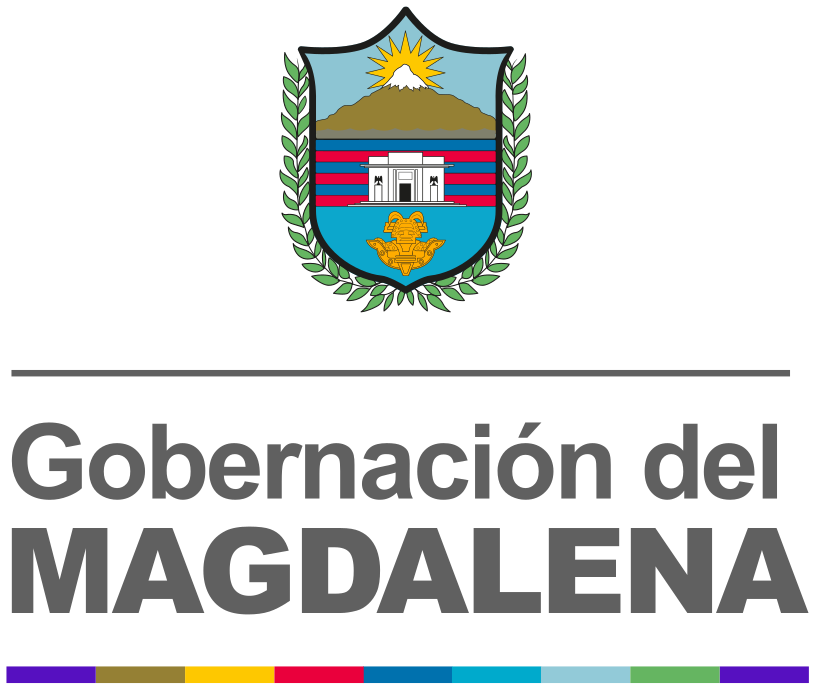

Estándar de componentes y guía de decisión (PrimeNG, licencias) → · Web Components: <gob-mapa-magdalena> y <gob-grafica>, con documentación y generadores en el Estudio. Estilo corporativo sobrio: superficies blancas y azul-noche, color de marca solo en acentos y «la línea» como firma discreta. Todo se renderiza con dist/css/magdalena.css (prefijo mg-, sin dependencias).
01. Botones
Un solo botón principal por pantalla (azul institucional). Secundario blanco, contorno y fantasma para el resto; los colores de acento solo para estados.
Ver código HTML
<div class="mg-row">
<button class="mg-btn">Principal</button>
<button class="mg-btn mg-btn--secondary">Secundario</button>
<button class="mg-btn mg-btn--outline">Contorno</button>
<button class="mg-btn mg-btn--ghost">Fantasma</button>
<button class="mg-btn mg-btn--dark">Oscuro</button>
<button class="mg-btn mg-btn--danger">Eliminar</button>
<button class="mg-btn mg-btn--success">Aprobar</button>
<button class="mg-btn" disabled>Deshabilitado</button>
</div>
<div class="mg-row" style="margin-top:1rem"><button class="mg-btn mg-btn--sm">Pequeño</button><button class="mg-btn mg-btn--lg">Grande</button><button class="mg-btn mg-btn--pill">Redondeado</button><button class="mg-btn mg-btn--accent">Acento</button></div>02. Tarjetas
Blancas con borde fino. El color aparece solo como filete: superior, lateral o la línea institucional.
Estándar
.mg-card
Filete superior
.mg-card--accent-top
Con la línea
.mg-card--stripe-top
Filete lateral
.mg-card--accent
Oscura
.mg-card--dark
Ver código HTML
<div class="mg-grid" style="--mg-col:15rem">
<div class="mg-card"><div class="mg-card__body"><h4 class="mg-h4">Estándar</h4><p class="mg-text-muted" style="margin:0">.mg-card</p></div></div>
<div class="mg-card mg-card--accent-top"><div class="mg-card__body"><h4 class="mg-h4">Filete superior</h4><p class="mg-text-muted" style="margin:0">.mg-card--accent-top</p></div></div>
<div class="mg-card mg-card--stripe-top"><div class="mg-card__body"><h4 class="mg-h4">Con la línea</h4><p class="mg-text-muted" style="margin:0">.mg-card--stripe-top</p></div></div>
<div class="mg-card mg-card--accent"><div class="mg-card__body"><h4 class="mg-h4">Filete lateral</h4><p class="mg-text-muted" style="margin:0">.mg-card--accent</p></div></div>
<div class="mg-card"><div class="mg-card__header">Con cabecera</div><div class="mg-card__body">.mg-card__header</div><div class="mg-card__footer">Pie</div></div>
<div class="mg-card mg-card--dark"><div class="mg-card__body"><h4 class="mg-h4">Oscura</h4><p style="margin:0;opacity:.75">.mg-card--dark</p></div></div>
</div>03. Indicadores (KPI)
Tarjeta blanca con ícono en chip. Cada indicador toma un único color de acento.
Ver código HTML
<div class="mg-grid" style="--mg-col:15rem"><div class="mg-stat"><div class="mg-stat__icon"><svg viewBox="0 0 24 24" fill="none" stroke="currentColor" stroke-width="2" stroke-linecap="round" stroke-linejoin="round"><path d="M14 2H6a2 2 0 0 0-2 2v16a2 2 0 0 0 2 2h12a2 2 0 0 0 2-2V8z"/><path d="M14 2v6h6M16 13H8M16 17H8"/></svg></div><div><div class="mg-stat__value">1.284</div><div class="mg-stat__label">Radicados</div><div class="mg-stat__delta">▲ 12% este mes</div></div></div><div class="mg-stat mg-stat--tropical"><div class="mg-stat__icon"><svg viewBox="0 0 24 24" fill="none" stroke="currentColor" stroke-width="2" stroke-linecap="round" stroke-linejoin="round"><path d="M22 11.08V12a10 10 0 1 1-5.93-9.14"/><path d="M22 4 12 14.01l-3-3"/></svg></div><div><div class="mg-stat__value">87%</div><div class="mg-stat__label">Atendidos</div></div></div><div class="mg-stat mg-stat--sun"><div class="mg-stat__icon"><svg viewBox="0 0 24 24" fill="none" stroke="currentColor" stroke-width="2" stroke-linecap="round" stroke-linejoin="round"><circle cx="12" cy="12" r="10"/><path d="M12 6v6l4 2"/></svg></div><div><div class="mg-stat__value">12</div><div class="mg-stat__label">Pendientes</div></div></div><div class="mg-stat mg-stat--heat"><div class="mg-stat__icon"><svg viewBox="0 0 24 24" fill="none" stroke="currentColor" stroke-width="2" stroke-linecap="round" stroke-linejoin="round"><path d="M10.29 3.86 1.82 18a2 2 0 0 0 1.71 3h16.94a2 2 0 0 0 1.71-3L13.71 3.86a2 2 0 0 0-3.42 0z"/><path d="M12 9v4M12 17h.01"/></svg></div><div><div class="mg-stat__value">3</div><div class="mg-stat__label">Vencidos</div><div class="mg-stat__delta is-down">▼ requieren acción</div></div></div><div class="mg-stat mg-stat--aqua"><div class="mg-stat__icon"><svg viewBox="0 0 24 24" fill="none" stroke="currentColor" stroke-width="2" stroke-linecap="round" stroke-linejoin="round"><path d="M17 21v-2a4 4 0 0 0-4-4H5a4 4 0 0 0-4 4v2"/><circle cx="9" cy="7" r="4"/><path d="M23 21v-2a4 4 0 0 0-3-3.87M16 3.13a4 4 0 0 1 0 7.75"/></svg></div><div><div class="mg-stat__value">45</div><div class="mg-stat__label">Municipios</div></div></div><div class="mg-stat mg-stat--solid"><div class="mg-stat__icon"><svg viewBox="0 0 24 24" fill="none" stroke="currentColor" stroke-width="2" stroke-linecap="round" stroke-linejoin="round"><path d="M21 10c0 7-9 13-9 13s-9-6-9-13a9 9 0 0 1 18 0z"/><circle cx="12" cy="10" r="3"/></svg></div><div><div class="mg-stat__value">9</div><div class="mg-stat__label">Sedes</div></div></div></div>04. Insignias y chips
Tonos suaves; usar el color pleno solo para estados críticos.
Ver código HTML
<div class="mg-row">
<span class="mg-badge">Primaria</span><span class="mg-badge mg-badge--solid">Sólida</span><span class="mg-badge mg-badge--dark">Oscura</span><span class="mg-badge mg-badge--gray">Neutra</span>
<span class="mg-badge mg-badge--green mg-badge--dot">Aprobado</span><span class="mg-badge mg-badge--yellow mg-badge--dot">Pendiente</span><span class="mg-badge mg-badge--red mg-badge--dot">Rechazado</span><span class="mg-badge mg-badge--cyan mg-badge--dot">En revisión</span>
<span class="mg-chip">Santa Marta</span><span class="mg-avatar">DC</span>
</div>05. Alertas
Información
Su solicitud fue radicada.Nota
Recuerde adjuntar los soportes.Listo
Documento firmado correctamente.Atención
Su sesión expira en 2 minutos.Error
No fue posible enviar el formulario.Ver código HTML
<div class="mg-stack">
<div class="mg-alert"><div><p class="mg-alert__title">Información</p>Su solicitud fue radicada.</div></div>
<div class="mg-alert mg-alert--info"><div><p class="mg-alert__title">Nota</p>Recuerde adjuntar los soportes.</div></div>
<div class="mg-alert mg-alert--success"><div><p class="mg-alert__title">Listo</p>Documento firmado correctamente.</div></div>
<div class="mg-alert mg-alert--warning"><div><p class="mg-alert__title">Atención</p>Su sesión expira en 2 minutos.</div></div>
<div class="mg-alert mg-alert--danger"><div><p class="mg-alert__title">Error</p>No fue posible enviar el formulario.</div></div>
</div>06. Formularios
Como aparece en su documento.
Correo no válido
Ver código HTML
<div class="mg-grid" style="--mg-col:16rem">
<div><label class="mg-label" for="n">Nombre</label><input class="mg-input" id="n" placeholder="Escriba su nombre"><p class="mg-help">Como aparece en su documento.</p></div>
<div><label class="mg-label" for="e">Correo</label><input class="mg-input is-invalid" id="e" value="correo@"><p class="mg-help" style="color:var(--mg-red-700)">Correo no válido</p></div>
<div><label class="mg-label" for="m">Municipio</label><select class="mg-select" id="m"><option>Santa Marta</option><option>Ciénaga</option></select></div>
<div><label class="mg-label">Opciones</label><label><input class="mg-check" type="checkbox" checked> Acepto términos</label></div>
</div>07. Tabla
Cabecera gris claro en mayúsculas pequeñas; sin cebra.
| Radicado | Asunto | Estado |
|---|---|---|
| 2026-00123 | Certificación laboral | Resuelto |
| 2026-00124 | Derecho de petición | En trámite |
| 2026-00125 | Queja | Vencido |
Ver código HTML
<table class="mg-table"><thead><tr><th>Radicado</th><th>Asunto</th><th>Estado</th></tr></thead><tbody>
<tr><td>2026-00123</td><td>Certificación laboral</td><td><span class="mg-badge mg-badge--green mg-badge--dot">Resuelto</span></td></tr>
<tr><td>2026-00124</td><td>Derecho de petición</td><td><span class="mg-badge mg-badge--yellow mg-badge--dot">En trámite</span></td></tr>
<tr><td>2026-00125</td><td>Queja</td><td><span class="mg-badge mg-badge--red mg-badge--dot">Vencido</span></td></tr></tbody></table>08. Navegación y sidebar
Barra superior de cristal, pestañas, migas y sidebar azul-noche con indicador cian en el ítem activo.
Ver código HTML
<header class="mg-navbar" style="margin-bottom:1rem; border-radius:12px; border:1px solid var(--mg-border)">
<a class="mg-navbar__brand" href="#"><img src="assets/logos/svg/logo-horizontal-color.svg" alt="Gobernación del Magdalena"></a>
<nav class="mg-row" style="margin-left:auto"><a class="mg-nav-link is-active" href="#">Inicio</a><a class="mg-nav-link" href="#">Trámites</a><a class="mg-nav-link" href="#">Contacto</a></nav>
</header>
<ul class="mg-breadcrumb" style="margin-bottom:1rem"><li>Inicio</li><li>Servicios</li><li>Trámites</li></ul>
<div class="mg-tabs" style="margin-bottom:1rem"><button class="mg-tab is-active">General</button><button class="mg-tab">Documentos</button><button class="mg-tab">Historial</button></div>
<div class="mg-sidebar" style="max-width:260px;border-radius:12px"><span class="mg-sidebar__label">Módulos</span><a class="is-active" href="#"><svg width="18" height="18" viewBox="0 0 24 24" fill="none" stroke="currentColor" stroke-width="2" stroke-linecap="round" stroke-linejoin="round"><rect x="3" y="3" width="7" height="7"/><rect x="14" y="3" width="7" height="7"/><rect x="14" y="14" width="7" height="7"/><rect x="3" y="14" width="7" height="7"/></svg> Panel</a><a href="#"><svg width="18" height="18" viewBox="0 0 24 24" fill="none" stroke="currentColor" stroke-width="2" stroke-linecap="round" stroke-linejoin="round"><path d="M22 19a2 2 0 0 1-2 2H4a2 2 0 0 1-2-2V5a2 2 0 0 1 2-2h5l2 3h9a2 2 0 0 1 2 2z"/></svg> Expedientes</a><a href="#"><svg width="18" height="18" viewBox="0 0 24 24" fill="none" stroke="currentColor" stroke-width="2" stroke-linecap="round" stroke-linejoin="round"><path d="M17 21v-2a4 4 0 0 0-4-4H5a4 4 0 0 0-4 4v2"/><circle cx="9" cy="7" r="4"/><path d="M23 21v-2a4 4 0 0 0-3-3.87M16 3.13a4 4 0 0 1 0 7.75"/></svg> Usuarios</a><a href="#"><svg width="18" height="18" viewBox="0 0 24 24" fill="none" stroke="currentColor" stroke-width="2" stroke-linecap="round" stroke-linejoin="round"><circle cx="12" cy="12" r="3"/><path d="M19.4 15a1.65 1.65 0 0 0 .33 1.82l.06.06a2 2 0 1 1-2.83 2.83l-.06-.06a1.65 1.65 0 0 0-1.82-.33 1.65 1.65 0 0 0-1 1.51V21a2 2 0 1 1-4 0v-.09A1.65 1.65 0 0 0 9 19.4a1.65 1.65 0 0 0-1.82.33l-.06.06a2 2 0 1 1-2.83-2.83l.06-.06a1.65 1.65 0 0 0 .33-1.82 1.65 1.65 0 0 0-1.51-1H3a2 2 0 1 1 0-4h.09A1.65 1.65 0 0 0 4.6 9a1.65 1.65 0 0 0-.33-1.82l-.06-.06a2 2 0 1 1 2.83-2.83l.06.06a1.65 1.65 0 0 0 1.82.33H9a1.65 1.65 0 0 0 1-1.51V3a2 2 0 1 1 4 0v.09a1.65 1.65 0 0 0 1 1.51 1.65 1.65 0 0 0 1.82-.33l.06-.06a2 2 0 1 1 2.83 2.83l-.06.06a1.65 1.65 0 0 0-.33 1.82V9a1.65 1.65 0 0 0 1.51 1H21a2 2 0 1 1 0 4h-.09a1.65 1.65 0 0 0-1.51 1z"/></svg> Ajustes</a></div>09. Cristal
Superficies translúcidas con desenfoque, sobre fondos de color o imágenes.
.mg-glass-dark
Para paneles sobre fondos oscuros o fotografías.
.mg-glass
Barra superior, tarjetas flotantes y modales.
Ver código HTML
<div style="padding:2rem;border-radius:16px;background:radial-gradient(500px 260px at 85% 0%,rgba(0,183,217,.55),transparent 60%),radial-gradient(500px 300px at 0% 100%,rgba(0,113,187,.6),transparent 60%),var(--mg-gradient-night)">
<div class="mg-grid" style="--mg-col:16rem">
<div class="mg-glass-dark" style="padding:1.25rem"><div class="mg-eyebrow" style="color:var(--mg-cyan)">Cristal oscuro</div><h4 class="mg-h4" style="color:#fff;margin:.5rem 0 .25rem">.mg-glass-dark</h4><p style="margin:0;opacity:.75;font-size:.875rem">Para paneles sobre fondos oscuros o fotografías.</p></div>
<div class="mg-glass" style="padding:1.25rem"><div class="mg-eyebrow">Cristal claro</div><h4 class="mg-h4" style="margin:.5rem 0 .25rem">.mg-glass</h4><p style="margin:0;font-size:.875rem;color:var(--mg-gray-800)">Barra superior, tarjetas flotantes y modales.</p></div>
</div>
</div>10. Progreso, fechas y marcos
Ver código HTML
<div class="mg-grid" style="--mg-col:16rem">
<div><div class="mg-label">Avance 70%</div><div class="mg-progress" style="--value:70%"><span></span></div></div>
<div class="mg-frame" style="padding:1rem">.mg-frame — borde degradado azul</div>
<div class="mg-frame mg-frame--stripe mg-frame--thick" style="padding:1rem">.mg-frame--stripe — borde con la línea</div>
<div><span class="mg-tag-date"><small>MARTES</small><strong>21</strong><small>DE JULIO</small></span></div>
</div>11. Hero y pie de página
Cabecera azul-noche con brillo cian discreto y la línea como firma; pie oscuro.
Servicios digitales para la ciudadanía
Trámites, consultas e información institucional en un solo lugar.
Ver código HTML
<section class="mg-hero mg-hero--stripe" style="border-radius:12px 12px 0 0">
<div class="mg-eyebrow" style="color:var(--mg-cyan);margin-bottom:.75rem">Gobernación del Magdalena</div>
<h1 class="mg-h1" style="color:#fff">Servicios digitales para la ciudadanía</h1>
<p style="max-width:52ch">Trámites, consultas e información institucional en un solo lugar.</p>
<div class="mg-row"><a class="mg-btn mg-btn--lg" href="#">Ver trámites</a><a class="mg-btn mg-btn--on-dark mg-btn--lg" href="#">Contacto</a></div>
</section>
<footer class="mg-footer" style="border-radius:0 0 12px 12px">Carrera 1C N° 16-15 Palacio Tayrona · Santa Marta · <a href="#">gobernaciondelmagdalena.gov.co</a></footer>12. Piezas del manual: carnet, tarjeta y post
Réplicas HTML de las piezas institucionales. Aquí SÍ se conserva la línea multicolor, como en el manual impreso.

Colombia
Gobernación delMagdalena
Te invita a la jornada de reactivación del Corredor Turístico Tayrona
MARTES21DE JULIOVer código HTML
<div class="mg-row" style="align-items:flex-start;gap:2rem">
<div class="mg-id-card"><img src="assets/logos/svg/logo-vertical-color.svg" alt="" style="width:80%"><div class="mg-id-card__photo"></div><div class="mg-id-card__name">Nombre y Apellido</div><div style="font-weight:600;color:var(--mg-gray-500)">Identificación</div><div style="font-weight:600;color:var(--mg-gray-500)">Área de trabajo</div></div>
<div style="flex:1;min-width:280px;display:grid;gap:1.25rem">
<div class="mg-business-card"><div><img src="assets/logos/svg/logo-vertical-color.svg" alt="" style="width:100%"></div><div style="text-align:right"><div class="mg-business-card__name">Margarita Guerra</div><div style="font-size:.85rem">Gobernadora</div><small style="color:var(--mg-gray-500)">Santa Marta · Magdalena<br>Colombia</small></div></div>
<div class="mg-post" style="max-width:360px"><div class="mg-shapes" style="position:absolute;inset:0;z-index:-1"></div><h2>Gobernación del<strong>Magdalena</strong></h2><div class="mg-divider mg-divider--stripe"></div><p>Te invita a la jornada de <b>reactivación del Corredor Turístico Tayrona</b></p><span class="mg-tag-date"><small>MARTES</small><strong>21</strong><small>DE JULIO</small></span><span class="mg-logo-pill"><img src="assets/logos/svg/logo-horizontal-color.svg" alt=""></span></div>
</div>
</div>13. Utilidades de fondo y texto (uso puntual)
Degradados de la gama azul y acentos para banners, ilustraciones o portadas; no para componentes de interfaz.
Texto con degradado
Título con subrayado corto
Ver código HTML
<div class="mg-grid" style="--mg-col:12rem">
<div class="mg-bg-primary mg-rounded-lg" style="padding:1.25rem">.mg-bg-primary</div><div class="mg-bg-sky mg-rounded-lg" style="padding:1.25rem">.mg-bg-sky</div>
<div class="mg-bg-aqua mg-rounded-lg" style="padding:1.25rem">.mg-bg-aqua</div><div class="mg-bg-night mg-rounded-lg" style="padding:1.25rem">.mg-bg-night</div>
<div class="mg-bg-deep mg-rounded-lg" style="padding:1.25rem">.mg-bg-deep</div><div class="mg-bg-steel mg-rounded-lg" style="padding:1.25rem">.mg-bg-steel</div>
</div>
<p class="mg-text-gradient" style="font:800 2.6rem/1.1 var(--mg-font-display);margin:1.25rem 0 0">Texto con degradado</p>
<div class="mg-eyebrow" style="margin-top:1rem">Sección</div><h3 class="mg-h2 mg-title-underline">Título con subrayado corto</h3>